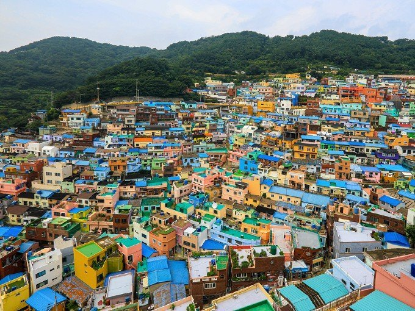
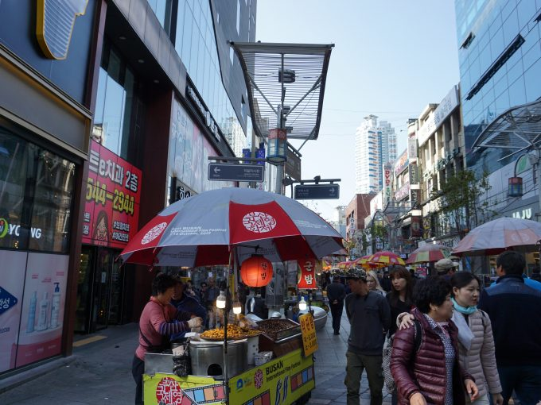
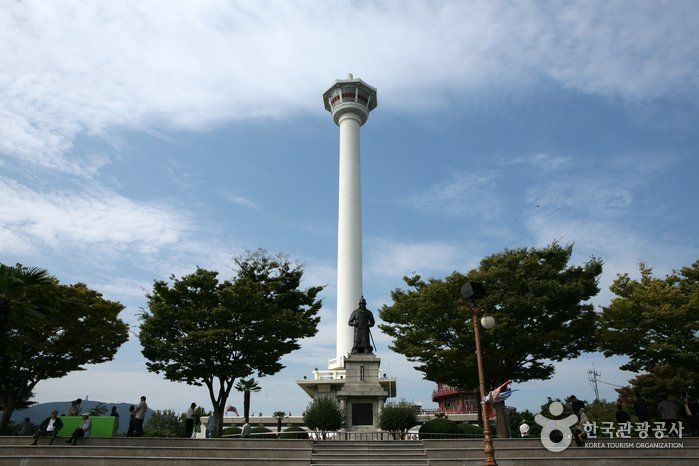
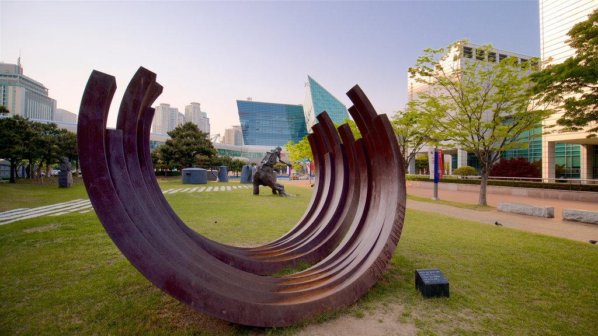
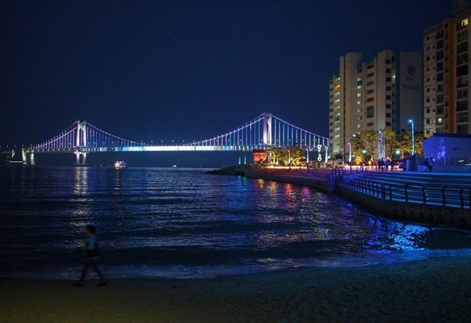

Comience su recorrido de un día en Busan visitando el Manchu Picchu de la ciudad, el pueblo cultural de Gamcheon (감천 문화마을). Es el pueblo colorido que es famoso por sus lindas y coloridas casas, calles artísticas, escaleras empinadas y callejones sinuosos. El pueblo ha sido un destino turístico muy conocido en Busan entre los lugareños y los turistas extranjeros después de que el gobierno lo convirtiera en un centro cultural con una renovación temática del arte público.
Mercado de Gukje

Gujke Market también cuenta con varias calles exclusivamente para comida, ropa y entretenimiento. En Arirang Street, puede encontrar Gukje Market Food Street, donde puede almorzar. Incluso puede experimentar comer en un área de asientos al aire libre a lo largo de la calle mientras está sentado en un banco. Además, también puede comprar ropa asequible y de moda por tan solo 1000 won coreanos en Gukje Market Youth Street (국제시장 젊음의거리 ). Después de comer, es posible que también desee ver una película en BIFF Square.
Torre de Busan

Después de comer, comprar y ver una película en el mercado de Gukje, diríjase a la Torre de Busan y vea una vista impresionante de Busan. Es una torre de 120 metros de altura a 69 metros sobre el nivel del mar ubicada en el Parque Yongdusan. También ofrece una impresionante vista nocturna de la Estatua del Gran Almirante Yi Sun-sin, la Campana de los Ciudadanos y muchos más.
Museo de Historia Moderna de Busan

A solo 9 minutos a pie de la Torre de Busan se encuentra el Museo de Historia Moderna de Busan. Visitar este museo te hará conocer y apreciar la historia moderna y contemporánea de Busan. Muestra reliquias y exhibiciones relacionadas con la ciudad y cómo llegó a ser importante en la historia de Corea.
Playa de Gwangalli

Para finalizar su recorrido de un día en Busan, visite una de sus famosas playas: la playa de Gwangalli ( 광안리해수욕장 ). Es una playa de 1,4 km de longitud famosa por su arena fina. Además de relajarte en la playa, también puedes deleitarte cenando en los románticos restaurantes y cafés cercanos. También hay tiendas que venden marcas de moda famosas. Además, puede tener una vista nocturna espectacular del puente Gwangandaegyo que exhibe luces brillantes que se extienden por el horizonte.